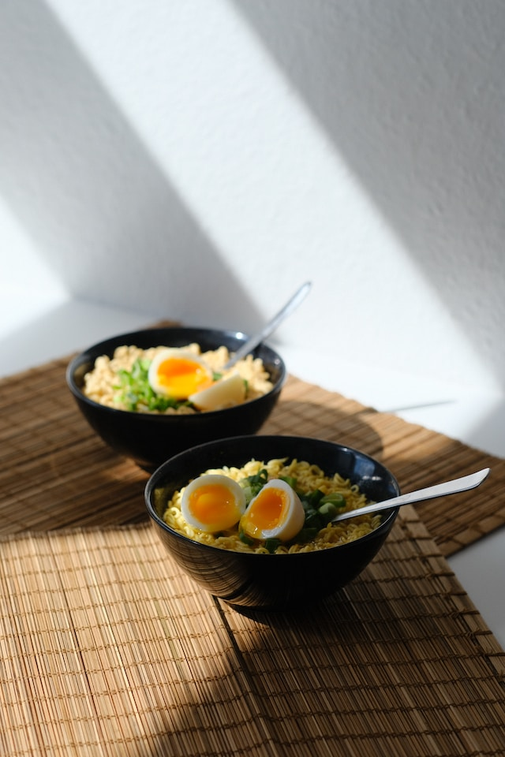

Easy Miso Ramen

Description
These quick-cooking noodles are inexpensive and can be transformed into a complete meal in minutes. Whether they go into stir-fry, crunchy salad, or a bowl of noodle soup, instant ramen recipes are where it’s at. Keep reading for a few of my favorite hacks for turning quick and easy instant ramen into a killer meal.
Ingredients
- Miso Paste
- Garlic
- Low-Sodium Chicken or Vegetable Stock
- Coconut Milk
- Soy Sauce
- Instant Ramen
- Baby Spinach
- Eggs
Steps
- Start with broth. The broth is the foundation of a great bowl of ramen. Start with low-sodium chicken or vegetable stock. Add flavorful ingredients like garlic and soy sauce. Coconut milk and miso paste give the broth rich flavor and a subtly creamy texture.
- Add vegetables. Baby spinach is my go-to because it cooks so quickly, but ramen is also fantastic with mushrooms, shredded carrots, sliced bell peppers, broccoli florets, corn, or snow peas. Pile in any vegetables hiding in your refrigerator for a colorful, nutrition-packed, healthy ramen bowl.
- Add protein. Add cooked chicken, pork, beef, bacon, tofu, or eggs for protein. Leftovers work very well here.
- Cook noodles. Cook the noodles in the broth just until tender. Check the package for the recommended cooking time
- Garnish bowls. Here’s where it really gets fun. Finish the bowls with ingredients that add texture and flavor. Add fresh herbs like cilantro or green onions. Add a drizzle of toasted sesame oil for a toasty flavor. Sprinkle on seasonings like Japanese furikake and toasted sesame seeds or spicy sauces like Sriracha, chili oil, or chili garlic sauce.